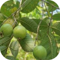
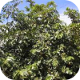
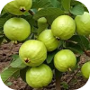
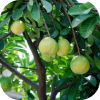

Psidium guajava L
NOMES(s) POPULAR(ES)
Goiabeira
GÊNERO
Psidium
FAMÍLIA
Myrtaceae
FLORA
América Tropical
Imagens




Características
A Psidium guajava L., conhecida popularmente como goiabeira, é uma arvoreta perene bastante utilizada em pomares domésticos e quintais urbanos. Ela pode atingir entre 3 e 10 metros de altura, com um tronco tortuoso característico de casca lisa que descama, e possui crescimento rápido.
Suas folhas são simples, opostas, de formato elíptico e consistência firme, com coloração verde-escura e nervuras bem marcadas na face inferior. A planta também produz flores delicadas, que aparecem solitárias ou em pequenos grupos com pétalas brancas e um tufo de fios no centro, sendo muito visitadas por abelhas na primavera.
Outro destaque são seus frutos, as goiabas, que são bagas arredondadas e muito aromáticas, excelentes para o consumo e livres de toxicidade, contendo polpa que varia do branco ao vermelho intenso. A Psidium guajava L. prefere clima tropical ou subtropical, com boa exposição ao sol, e se adapta bem a quase todos os tipos de solo, mostrando grande resistência e rusticidade.
Por ser muito produtiva e fácil de cuidar, é muito usada para fins paisagísticos e funcionais, especialmente na formação de pequenos pomares familiares e na atração de pássaros para o jardim.
Localização no
Campus

PRÓXIMO À
EDITAR
JARDIM
EDITAR
COORDENADA
EDITAR